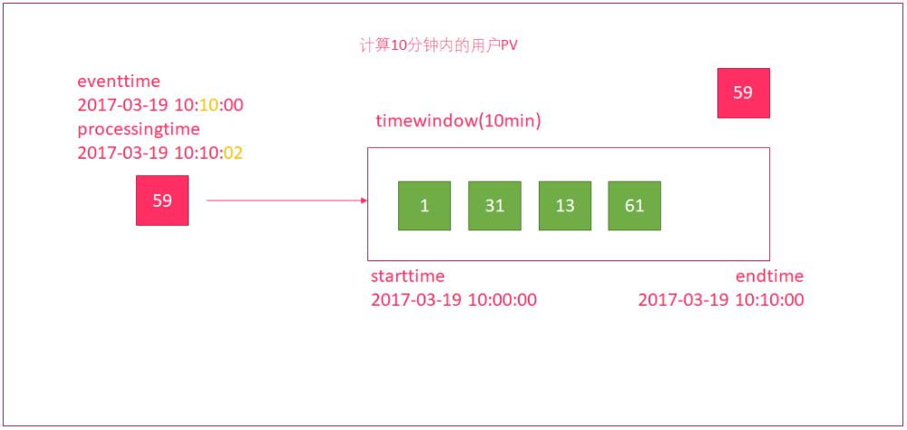

TreeviewCopyright © aleen42 all right reserved, powered by aleen42
Flink流处理
5. Flink的水印机制
5.1. Flink流处理时间方式
EventTime[事件时间]
事件发生的时间，例如：点击网站上的某个链接的时间
IngestionTime[摄入时间]
某个Flink节点的source operator接收到数据的时间，例如：某个source消费到kafka中的数据
ProcessingTime[处理时间]
某个Flink节点执行某个operation的时间，例如：timeWindow接收到数据的时间

设置Flink流处理的时间类型（一般在生产环境中，都是使用EventTime来进行计算的）
// 设置为按照事件时间来进行计算
env.setStreamTimeCharacteristic(TimeCharacteristic.EventTime)
// 设置为按照处理时间来进行计算
env.setStreamTimeCharacteristic(TimeCharacteristic.ProcessingTime)
5.2. 水印机制产生的原因
在实际环境中，经常会出现，因为网络原因，数据有可能会延迟一会才到达Flink实时处理系统。
我们来设想一下下面这个场景:

- 使用时间窗口来统计10分钟内的用户流量
- 有一个时间窗口
- 开始时间为：2017-03-19 10:00:00
- 结束时间为：2017-03-19 10:10:00
- 有一个数据，因为网络延迟
- 事件发生的时间为：2017-03-19 10:
10:00 - 但进入到窗口的时间为：2017-03-19 10:10:
02，延迟了2秒中
- 事件发生的时间为：2017-03-19 10:
- 时间窗口并没有将
59这个数据计算进来，导致数据统计不正确
这种处理方式，根据消息进入到window时间，来进行计算。在网络有延迟的时候，会引起计算误差。
5.3. 使用水印解决网络延迟问题
水印（watermark）就是一个时间戳，Flink可以给数据流添加水印，可以理解为：收到一条消息后，额外给这个消息添加了一个时间字段，这就是添加水印。
- 水印并不会影响原有Eventtime
- 当数据流添加水印后，会按照水印时间来触发窗口计算
- 一般会设置水印时间，比Eventtime小几秒钟
- 当接收到的
水印时间 >= 窗口的endTime，则触发计算

示例
编写代码, 计算5秒内，用户的订单总额
订单数据（订单ID——UUID、用户ID、时间戳、订单金额），要求添加水印来解决网络延迟问题。
步骤
- 创建流处理运行环境
- 设置处理时间为
EventTime - 创建一个订单样例类
Order，包含四个字段（订单ID、用户ID、订单金额、时间戳） - 创建一个自定义数据源
- 随机生成订单ID（UUID）
- 随机生成用户ID（0-2）
- 随机生成订单金额（0-100）
- 时间戳为当前系统时间
- 每隔1秒生成一个订单
- 添加水印
- 允许延迟2秒
- 在获取水印方法中，打印水印时间、事件时间和当前系统时间
- 按照用户进行分流
- 设置5秒的时间窗口
- 进行聚合计算
- 打印结果数据
- 启动执行流处理
参考代码
import java.util.UUID
import java.util.concurrent.TimeUnit
import org.apache.commons.lang.time.FastDateFormat
import org.apache.flink.api.scala._
import org.apache.flink.streaming.api.TimeCharacteristic
import org.apache.flink.streaming.api.functions.AssignerWithPeriodicWatermarks
import org.apache.flink.streaming.api.functions.source.{RichSourceFunction, SourceFunction}
import org.apache.flink.streaming.api.scala.{DataStream, StreamExecutionEnvironment}
import org.apache.flink.streaming.api.watermark.Watermark
import org.apache.flink.streaming.api.windowing.time.Time
import scala.util.Random
object WaterMarkDemo {
// 3. 创建一个订单样例类`Order`，包含四个字段（订单ID、用户ID、订单金额、时间戳）
case class Order(orderId: String, userId: Int, money: Long, timestamp: Long)
def main(args: Array[String]): Unit = {
// 1. 创建流处理运行环境
val env = StreamExecutionEnvironment.getExecutionEnvironment
// 2. 设置处理时间为`EventTime`
env.setStreamTimeCharacteristic(TimeCharacteristic.EventTime)
// 4. 创建一个自定义数据源
val orderDataStream: DataStream[Order] = env.addSource(new RichSourceFunction[Order] {
var isRunning = true
override def run(ctx: SourceFunction.SourceContext[Order]): Unit = {
while (isRunning) {
// - 随机生成订单ID（UUID）
// - 随机生成用户ID（0-2）
// - 随机生成订单金额（0-100）
// - 时间戳为当前系统时间
// - 每隔1秒生成一个订单
val order = Order(UUID.randomUUID().toString, Random.nextInt(3), Random.nextInt(101), new java.util.Date().getTime)
ctx.collect(order)
TimeUnit.SECONDS.sleep(1)
}
}
override def cancel(): Unit = isRunning = false
})
// 5. 添加水印
val watermarkDataStream = orderDataStream.assignTimestampsAndWatermarks(new AssignerWithPeriodicWatermarks[Order] {
var currentTimestamp = 0L
val delayTime = 2000
override def getCurrentWatermark: Watermark = {
// - 允许延迟2秒
// - 在获取水印方法中，打印水印时间、当前事件时间和当前系统时间
val watermark = new Watermark(currentTimestamp - delayTime)
val dateFormat = FastDateFormat.getInstance("HH:mm:ss")
println(s"当前水印时间:${dateFormat.format(watermark.getTimestamp)}, 当前事件时间: ${dateFormat.format(currentTimestamp)}, 当前系统时间: ${dateFormat.format(System.currentTimeMillis())}")
watermark
}
override def extractTimestamp(element: Order, previousElementTimestamp: Long): Long = {
val timestamp = element.timestamp
currentTimestamp = Math.max(currentTimestamp, timestamp)
currentTimestamp
}
})
// 6. 按照用户进行分流
// 7. 设置5秒的时间窗口
// 8. 进行聚合计算
// 9. 打印结果数据
// 10. 启动执行流处理
watermarkDataStream.keyBy(_.userId)
.timeWindow(Time.seconds(5))
.reduce {
(order1, order2) =>
Order(order2.orderId, order2.userId, order1.money + order2.money, 0)
}
.print()
env.execute("WarkMarkDemoJob")
}
}